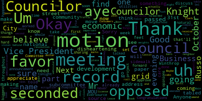

[Marks]: The 35th regular meeting of the Meffitt City Council will be called to order. Clerk, call the roll.
[SPEAKER_01]: Councilor DelaRosso. Present. Councilor Falcone. Present. Councilor Layton. Present.
[Castagnetti]: Chairman Marks.
[Marks]: Present. Five present, two absent. Please rise to salute the flag. I pledge allegiance to the flag of the United States of America, and to the Republic for which it stands, one nation under God, indivisible, with liberty and justice for all. Motion to suspend the rules, to take papers under suspension. Councilor Del Russo, all in favor? paper 17 dash seven five one offered by council a night be resolved. City solicitor in conjunction with the chief of police and building commissioner provide the council with a draft ordinance establishing safety standards, regulating the commercial display and storage of firearms, ammunition and firearm accessories in the city of method. Council night.
[Knight]: Mr. President, thank you very much. Looking back in the newspaper over the summer, I think if we all recall a police standoff up in Saugus along Route 1. And what happened was the gentleman had made his way into a Dick's Sporting Goods up in Route 1 and got his hands on some firearms, Mr. President. And this resulted in a police standoff. They closed down Route 1 for a number of hours. Recently in our community, we were very lucky to open up a Dick's Sporting Goods. And this Dick's Sporting Goods is a great, great facility. However, they do sell some questionable material that I don't personally support, which would be firearms, Mr. President. But this is in no way, shape, or form an attempt to push back on people's Second Amendment rights. Mr. President, what it is is an effort to regulate The safe storage and sale and display of firearms, ammunition, and firearm accessories in the city of Medford. You know, the cat's out of the barn, the horse is out of the barn. We have a facility here in the community that's selling firearms. I think it's incumbent upon us as a council to take all the steps that are necessary to ensure that we maintain that the community remains safe. So with that being said, Mr. President, I bring this forward as a conversation starter, a spot for us to jump off from a launching pad, if you want to call it that, for us to start this discussion and have this conversation. Um, so with that being said, Mr. President asked my council colleagues to support the measure and move for approvals.
[Marks]: Thank you. Councilor Knight. Second by Councilor Falco. Councilor Del Russo. I support this as a conversation, uh, started Mr. Chairman. On the motion. All those in favor? Aye. Opposed? The ayes have it. The motion is adopted. Motion to take papers in the hands of the city clerk. Second motion. Do we have any other papers? Right. So papers in the hands of the city clerk. I think there's three more.
[SPEAKER_13]: You've got 17, seven 52 under suspension.
[Marks]: Under suspension 17-752, administration refund taxpayers in the city council, November 14th, 2017. I'll move after this. Councilor Knight.
[Knight]: Mr. President, thank you very much. This paper here is paper 17752, which reads, be it resolved the city administration refund taxpayers all convenience fees incurred during the current fiscal year as a result of the online payment of tax bills issued by the city. And be it further resolved that the city administration take the necessary steps to eliminate or assume such fees going forward. Mr. President, I've run into several situations, gotten several phone calls, bumped into people that have attempted to pay their property tax bills online. And when they go in there to pay their property tax bill, they are assessed a convenience fee. The last one that I heard was upwards of close to $50, Mr. President. And that doesn't sound too convenient to me. We're sitting here in the community. We're asking robocalls to go out. We're asking things to get posted on the website. We're asking people to utilize technology more and more. We shouldn't be charging them to do it. We should be encouraging it, not discouraging it, Mr. President. So I'm asking that the administration look into this and to take the appropriate steps to either waive the fee, assume the fee, or eliminate the fee.
[SPEAKER_13]: Mr. Chairman.
[Marks]: Counsel Del Rosso.
[Dello Russo]: I have a little R after my name, so I'm the last person that wants to see people taxed, especially when they get taxed that come up from behind them. So this could be construed at that, but I would want to hear an explanation about this from either the treasurer or Alicia Nunley on what our expenses are and how this is something that can, if not, I wouldn't want to see people pay $50 every just to pay a bill. Um, but I certainly, uh, uh, know that at some point, uh, to provide that, uh, so I support this, but I'd like it, uh, uh, to, uh, amend it that, uh, we get an explanation in person from, uh, the appropriate person from the, uh, city administration regarding these financial matters. If that's, amenable to the presenter of the resolution. In the spirit thereof.
[Knight]: I certainly have no problem with that, Mr. President. If we're going to take a vote, I want it to be an informed vote, and I want everybody behind the rail to be comfortable with it. With that being said, I'd be happy to even withhold the request until we have the presentation from the treasurer or the financial director, whatever the council feels comfortable with. Again, I just think this is an opportunity for us to get... They can be simultaneous.
[Dello Russo]: most things move.
[Marks]: You want to refer to subcommittee?
[Knight]: We can do that too.
[Marks]: Audit and finance. Is that? No, that's moving along.
[Knight]: That's fine. I mean, my motion is to have it passed, but, um, you know, go to the administration. But if the council has questions, then I have no problem, um, going along with whatever it is that it will take to make sure that this comes to fruition.
[Marks]: So the motion on the floor is by Council Light to have this submitted to the city administration.
[Knight]: All those in favor?
[Marks]: Opposed?
[Knight]: Did you amend it, Councilor?
[Dello Russo]: I amended it, yes. Just to ask that we have an in-person explanation of why this is going on.
[Marks]: Before we send it to the administration?
[Dello Russo]: Simultaneously.
[Marks]: All those in favor? Aye. Opposed? The ayes have it, the motion is adopted.
[Dello Russo]: efficiency, Mr. President.
[Marks]: Papers in the hands of the clerk offered by Councilor Moxby resolved that the sidewalk in front of one 10, one 12, Warren Street be replaced in the interest of public safety? Move approval. Motion for approval. All those in favor? Opposed? The ayes have it. The motion is adopted. Offered by Councilor Marks, we resolve that the electronic speed sign be placed after Winthrop Circle heading toward West Meffitt Square on High Street in the interest of public safety.
[Dello Russo]: Move approval, Mr. President. If I may, Mr. President, as you're well aware, and I'm sure has been reported to you in why you put this on there, is that we have certainly a lot of hasty driving there that has resulted in a number of bad situations, Mr. President. And I think that would be a good place for that monitoring. It serves to quell and remind people of their own behaviors, especially since there's been a citywide adjustment in the speed limit.
[Marks]: Thank you, Councilor. On the motion, all those in favor? Aye. Opposed? The ayes have it. The motion is adopted. Offered by Councilor Marks, be resolved that the street pole number 4354 at 41 Mangles be replaced in the interest of public safety. Move the pole. All those in favor? Aye. Opposed? The ayes have it. The motion is adopted. Motion to revert back to regular order of business. All those in favor? Aye. Opposed? The ayes have it. Motions, orders, and resolutions 17-750 offered by vice president Mox, be resolved that the construction work on Harvard street from main street to Benton road be discussed. Thank you, Mr. President. Um, we all received, uh, uh, several emails regarding the, uh, national grid, uh, is determined that a gas main on Harvard street for main street to Benton road will be replaced. Um, starting Monday, November 13th, uh, which was yesterday lasting four weeks, taking a place Monday through Friday from 7.00 PM to 5.00 AM. That was the original request. uh, since then, uh, there's been some, uh, emails going back and forth, uh, that the work will now take place during the day. And, um, I have yet to get confirmation from chief Sacco who needs to make that decision. But, um, the concerns I've heard from residents, and I know many of my colleagues have, uh, was really the lack of notification of residents in the area and the lack of input from any residents. Some residents found out through finding a flyer on the street that this work was going to take place. And many homes in the area that directly abut this and whose bedroom windows are located within 20 feet from potential construction at night naturally would have some grave concerns about sleep disruption during a four week span. I know there's a number of residents here that would like to speak on the issue, Mr. President. And again, I would ask that this project be duly notified through Reverse 911 in the city, Mr. President, alerting residents when this work will take place, how long the work will take, and when it will be done. If it's going to be during the day or the evening is extremely important, Mr. President, that residents are aware of this. So at this time I'd open the floor if anyone from the direct abuttance would like to speak.
[Scarpelli]: Good evening. Good evening.
[Ferrari]: Yes. My name is Angela Ferrari. I live at two 15 Harvard street and my unit is 19. I'm directly on Harvard street and most certainly the entire area right up outside my door and bedroom will be affected by this. Um, as you mentioned, we learned of this. by a flyer, this flyer being taped to my outside door on last Friday afternoon. So that was literally four days, five, four days ago. Um, I knew nothing about this until then. And clearly I don't think any of the other, uh, condo owners at the Lincoln Kennedy school, um, complex learned about it either until we got these notices. This opens up obviously a whole plethora of issues. Um, not only the, original idea of working overnight, which still has yet to be resolved. So we as residents don't know if we're going to be disrupted overnight or in the day. But clearly we all object to the overnight work because that means none of us will get any sleep for four or five weeks, whatever this work is slated to be done by. But even if it does go in the daytime, and I understand that they need to upgrade this work. I understand that it needs to be done. What they didn't do is get the residents input as to how that's going to affect us by way of the fact that we are a private association. We are a private property. So what happens is a lot of times we get individuals cutting through our property to turn around and go the alternate way. It didn't take into effect that the workers will be there extremely early in the morning. to with big trucks digging or needing to park or causing dust up or issues for people that might have health problems. None of that was discussed or even brought to the property owners and gotten input by. There were a lot of families in these units. So clearly both people who work and people who have families are going to be disrupted not only with needing to reroute going in and out of the homes or our parking spaces. And in addition to that, it's over the holidays. I mean, they've chosen a very difficult time of year. It's holidays, it's, you know, now we potentially could be faced with weather issues that could delay the construction from being finished. So now we're looking potentially going into like, you know, mid to late December, if that's the case, you know, if we do have some weather issues. Beyond that, I think there's a part of this notice that says, temporary or permanent restoration of disturbed areas will be in accordance with the town ordinance. So that doesn't give us a lot of faith that the street being ripped up is going to be returned to the current state that it's in. Myself, as a resident, had a problem with a manhole cover that was constantly banging, and I raised the issue and complained about it for the last year and a half, almost two years. And less than a month or two ago, I finally got that manhole cover fixed, and I finally was able to start getting a good night's sleep with it banging constantly. What this is now saying is it's going to rip up the entire street over again. And when is, you know, then we're dealing with when are these original, the original state of the road going to be back to normal, somewhat normal. In addition, recently over the summer, the intersection of Main Street and Harvard that had had terrible bumps and divots in the road right by a business on the corner there, finally got repaired. And now that's going to be all ripped up. So I guess there's a number of concerns. The disruption, the noise, the lack of notice. We're not confirmed when they're going to do the work, whether it's day or night. potential delays in case there's weather, and then of course what the road status is gonna be back to normal if and when it's gonna finally be back after they rip it all up. And then we all have to make individual appointments for National Grid to connect our service again. So there's like a number of steps that is going to take place according to their notice. And I don't know if you've received a copy of the notice, which if you haven't, I'd be happy to give you mine or make a copy. Yeah. Great. Thank you. I think it would be important for you to have that so that you can refer to it. But you know, I for one understand and I'm happy that they're doing an upgrade, but I think that it just completely could have been, been handled more appropriately and gotten input from the residents. Thank you very much for my hearing.
[Scarpelli]: Thank you.
[Ferrari]: Any questions? No. Okay. Thanks. Thank you.
[Scarpelli]: Good evening. Your name and address for the record.
[Donovan]: Hello. My name is Christopher Donovan, uh, full of rain road, Bedford mass. Uh, just one question. Are we getting a new sidewalk up at, at winter path through this mitigation money through national grid to go back to the prior incident?
[Scarpelli]: We did discuss that. That's part of the 200 feet that we were told that Winthrop street will now have sidewalk throughout the, And that's national grid is going to take care of that. It's not a national grid. I believe it was ever source. That was already set. Is that something? And we'll be, that'll be part of next week's meeting too, I believe. So we can see this part of the MOU. I believe it was in the MOU. Good. Thank you all. Congratulations. Thank you. Anyone else?
[Marden]: Go ahead. I was kind of waiting to be the last one speaking because I'm the newest resident of Medford. Maybe not the newest, but we moved in at the end of July. Congratulations. So maybe an address for the record. I'm Rod Marden. I'm at 215 Harvard street, unit 17. Uh, the honored neighbor of Angela who gave, uh, thorough, comprehensive presentation of the problems. The only thing that I would like to add to that is standing here, I'm very fortunate to be standing here today because when I moved in, for about five weeks in a row, I was not able to sleep because of that manhole cover. and my health deteriorated. My arrhythmia got much worse. I had to get an emergency appointment with Dr. Felton's office. My concern when I saw this flyer and it was shoved into my door, I had a few questions, ones that were addressed by Angela, and also how much coordination was there between National Grid and the city of Medford? I'm not sure if there was coordination with Chief Sacco, his department, regarding this. Many unanswered questions as to what's going to happen. I was very glad to see that things were changed to the daytime, but I'm not sure whether the change happened because of some pressure from emails or whether there was any sort of effort and coordination with the city. We have no information about that. And I think before work begins, there should be coordination with the city about this. One other point, this is a street that's used by school buses. I have a concern of what's going to happen with the rerouting of those school buses. Uh, if the work was done over the summertime, there would probably, probably be a lot less disruption to the local public schools here. There's something that should be considered unless there's an emergency situation with the gas leak that they have to explore. Uh, the fire gave some hint that they have to drill some holes or find out where the, uh, where the pipe is. I'm wondering whether they're doing anything about, whether there's a report of a gas leak or not. There's so many questions that have been left unanswered that the residents don't have the answers to. And I think that we need to take a look as Medford residents and as our elected representatives to make sure that this work proceeds in the healthiest and best way possible for the residents and for the city. Thank you.
[Scarpelli]: Um, for one, I know that this council has worked very hard with making sure that our, uh, our natural grid never source and other utilities do what they need to do. So I find this disheartening. This will be the first time I'll see that, that announcement. So I think this is something that we'll, we'll get on as soon as we can. So thank you for coming out tonight and, uh, and sharing your opinions. Thank you. Um, we have a motion. Do you have any other, anyone else? Sorry. How's it going?
[Giganti]: Rick Giganti, Hobbit street, one 39. Oh, there's, there's a ton of things for us. Thank God for the local coffee shop. Otherwise I wouldn't have even known about this. Thank you, Tony. Um, I'm on the other side of the world on this one because I'm on the other side of main street, but that's going to impact me tremendously, whether it's night or day. Uh, if you don't know Harvard street, and I'm sure you guys all know, uh, me trying to get out of my driveway at a normal day is a task, let alone trying to do something like this. Um, if it's at nighttime, I have an issue because I have rental property and I, and unfortunately I've been trying, very desperately to try to get parking permits. I can't get a parking permit because Harvard street doesn't have parking permits, but where I'm located, they're saying I can park on the street. Well, no, I can't park on the street, not in front of my house. I can't have a sign that says no parking both sides. So what we ended up doing with my tenants is they're parking up in front of two 15 on the opposite side. Now, if they're going to rip up the road, How are we going to park? Where are we going to park? Can I get a parking permit for these tenants of mine, which are two, two females that work. One works at, um, Leahy clinic on, on, uh, she's a nurse and she does 12 hour shifts. So she's getting in at seven and leave it at seven or six. And sometimes she does overtime. And then I have another one that works at Raytheon who does overtime. So I'm going to have an issue with parking. Great things were mentioned here tonight. Weather's going to be coming up, four weeks, daytime, nighttime, school buses. We see it all, never mind just even the fire apparatuses. That's a major state road. I was told when I tried to get a sign for just stopping 200 feet or 100 feet from the red line, from the red light in the four corners, so that I could get out of my driveway on a red light, figuring maybe they could stop here on red. That was against my law and all the laws and rules because it's a state road. Is this going to be a state-funded project? Are we gonna get anything, be in Harvard Street, be in the state road? Has that come up? because that was an issue when I went up against a traffic commission before on Havard Street. So there's a lot of issues and I'm looking around. There's not a lot of people here and for Havard Street, you know the traffic on Havard Street and you know the people on Havard Street. There should be a lot more people up here other than just four or five of us talking, especially with the impact that this is going to have. School buses alone, it's a big safety issue, and you're coming into holiday season. So try to push it out a little bit more and get some more people, some more thoughts, but there needs to be some more action for this particular construction to go on. Thank you. Thank you.
[SPEAKER_19]: Good evening. Congratulations everybody. Um, the concern I have is, you know, what Harvard is a very, very busy street. There's a lot of traffic every day. Do we have a plan? Has anybody seen a plan on what they would do for alternative routes for people to take, you know, regardless of school buses or, construction trucks with the green line going up, the concrete trucks that you see every day going up there. It's a concern. Where's the traffic going to go? Because right now, Bonner Avenue, tremendously overcrowded in the mornings, in the afternoons. Golden Avenue, all those areas. And it's going to affect people driving around in the area trying to make it back and forth to work. get back home, and I just wish that before they started this. First of all, I don't agree with the time frame when they're going to do it, because based on some of the previous work that they've done, it hasn't been broom cleaned and has to be re-repaired. Winter time is going to be tough. I mean, I might as well just put sand back in the holes there, because the concrete or whatever they put there, I don't think it's going to make it through the winter season. The most important thing, I think, is the people that have stores. This is a busy season for them. You have the Oasis. This is when a lot of people make their money because of all the different parties they have for the holiday season and everything. So, I mean, I don't even know that these people, the store owners, were made aware of this. The most important thing is, where are you going to get your cannolis for Thanksgiving? That's what I'm more concerned about, Mr. Theodore. That's right. But anyways, I would expect more from National Grid. And I know you guys will do what you have to do to get things squared away. Thank you.
[Scarpelli]: We appreciate it. Again, I think this is, we just had a Committee of the Whole meeting with the project being done with Eversource. And one of the biggest things we talked about is, as we move forward with that before we approve it, is having more of community input and making sure we have community meetings. So I find this disheartening that this has happened again to this neighborhood. So, um, I know that you have champions behind this rail. They're going to make sure that we can do what we can right now. So, uh, Mr. Vice president, if you can.
[Marks]: Mr. President, if I could, and I want to thank the residents for coming up tonight. Um, where, where this is a non emergent job. Um, I know it's dealing with a gas line. Uh, I think it's crucial that, uh, the city and I'm not going to point the finger at uh, the utility company. It's the city that represents the residents of this community, not the utility company. The city should have a clerk of the work assigned to the project. Residents should be aware of exactly who in the city is the contact person for every project that's taken place in this community. And, uh, if a traffic plan, as, uh, uh, Mr. D Antonio mentioned, uh, is out there, Everyone should be aware if they're going to be closing off certain sections, if they're going to be diverting traffic, everyone in that area should be aware, Mr. President. And I have yet to hear anyone that's aware of anything that's going on with this project. Also, the fact that it is not an emergency project, to me, The city should be sitting down with National Grid and talking about mitigation. What can we do? You know, we realize lines get older and so forth and need replacement. I don't think anyone doubts that. But on behalf of the residents of this community, we should be able to sit down with these utility companies and request certain things, Mr. President. And I know on Harvard, uh, you know, we've talked about broken sidewalks at nauseam, uh, up and down Harvard street. Wouldn't it be nice to be able to go to the utility company and say, you know what, uh, because of the inconvenience, we would ask that you replace, you know, 30 different sidewalks on Harvard. Um, you know, to me that that's a no brainer that that should, those discussions should be happening between the city and the utility companies. And, uh, I think all they're doing is approving things and no follow up. and we're seeing it time and time again. So I would ask Mr. President in the form of a motion that a clerk of the works be assigned to this project immediately and the residents be notified who in the city is going to be the contact person for this particular project. The traffic plan be provided also, Mr. President, whether it's on the website so city residents can view it or that the director butters receive a copy of the traffic plan And also that, going forward, that the city discuss mitigation. When a project of this size comes in and it's going to be an impact to the community through traffic, through noise, through disruption of everyday quality of life, as was mentioned, you get the holidays coming up. You know, these are the things that we should be using as leverage with the utility companies to get them, Mr. President, to do curb to curb, as we've talked about, restoration, rather than just restoration in the area where they're digging, new sidewalks, new handicap ramps, improved lighting, whatever it might be. But this is the time to hit up these multi-billion dollar companies. on behalf of the residents of this community. So I would offer those three initiatives, Mr. President, in the form of a motion.
[Scarpelli]: Okay. On the motion, Vice President Mast, that we amend the paper that be forwarded, the mitigation, the Traffic Plan, and the Clerk of the Works. neighbor communication. So that's the four pieces I believe that we need to send to the administration. It's amended. Okay. So second, uh, Councilor Knight, all in favor.
[Dello Russo]: Aye.
[Scarpelli]: All opposed. The ayes have it.
[Marks]: Mr. President. Thank you, Mr. President. We received the correspondence, um, from the, uh, city solicitor, uh, to Mayor Burke regarding council resolution. 16 dash seven eight three. Uh, this was a resolution I offered well over a year ago that the city and the city, the city council and their wisdom, uh, asked that, uh, an ordinance be drafted up by the city solicitor who I am very grateful, uh, took the time to draft this up. Um, I would like to send this particular paper to the subcommittee on business and economic development, uh, just for the edification of the viewing audience. Uh, this is a consumer protection ordinance. And if I could just read it briefly, Mr. President, please do. It says dear mayor Burke and the above caption resolution, the city council requested that the city solicitor draft an ordinance requiring any retail or wholesale business, which is made aware of an incorrect store price that has the ability to communicate with the customer through the offering of a store savings card or other method method be required to refund or credit all customers who purchase an item marked incorrectly. It goes on to say the code of mass regulations already requires prompt payment be made to customers who have been overcharged and the store owners maintain a price accuracy and missing price report. This takes it one step further, Mr. President, and I think it really is a consumer-friendly ordinance And I'm not aware of anyone in this state that has an ordinance like this. But once a store is on notice of an incorrect price, you can go up and talk to the store manager and they'll reimburse you the difference. Some stores will even give you the item for free. What I'm asking, Mr. President, we take it one step further. In this day and age with technology and store cards and credit and debit cards and everything else, that store, once they're on notice that a price is incorrectly marked, they should be able to go through that day's worth of receipts and see who else bought that item and maybe wasn't savvy enough to pick up on the incorrect price. And then they reach out to the customer and either a debit credit, their debit card or their charge card, or send them out, uh, the difference in the meal, Mr. President, um, on the difference, uh, and price that was incorrectly marked. Um, Steve, uh, Champoli, who's our, uh, director of seal of weights and measures, uh, reviewed this language and, uh, his, I don't want to quote him, but he said he can't wait to get this enacted so he can start enforcing it, Mr. President. Um, so I would ask that it be sent to the subcommittee for, uh, its due diligence and vetting and, uh, eventual passage. of this very important consumer-friendly protection ordinance, Mr. President. Second, Mr. Chairman.
[Scarpelli]: Thank you, Mr. Vice President. I remember the resolution is very important. Consumers appreciate it. So we're going to, on the motion, seconded by Councilor Dela Russo that this go to subcommittee on economics. Business and economic development. Business and economic development. Name and address for the record. Thank you.
[Castagnetti]: On that vein of overcharging consumers, I would like to share a story that happened to me. I bought $20 worth of gasoline a few weeks back in this city at a gas station. Mathematics, I sort of know. It was 7.5 gallons. I thought it should have been 8 gallons because it was exactly $2.49 and nine-tenths per gallon. So I'm thinking there should be eight gallons for $20. And I questioned the attendant who poured the gas into my vehicle, and he says, I just work here, you know. And so I guess what I'm trying to say is people should probably pay attention at the gas pumps. And I brought gas to the following same station weeks later, And it came out exactly eight gallons at $2.50 a gallon. So it was corrected. I'm not sure about the weights and measures, if that was just an abnormality or what. That's all I wanted to say.
[Scarpelli]: Thank you. Maybe at the end of the meeting, Mr. Cassin, if you could give us the name of that company that we can actually, not publicly, but ask the weights and measures director, Mr. Champoli, to look into that. That's what his job is, to make sure those ones
[Castagnetti]: I understand, but I'm a sub-Method graduate. I don't like to be so-called Mr. Belgian rat.
[Scarpelli]: Leave a note.
[Castagnetti]: But I will keep an eye on that station. Thank you. Thank you.
[Marks]: Mr. President, just if I could, just for the education of the viewing audience, Mr. Champoli is responsible for all scales in the community, as well as pumps. And if you look at any of the gas pumps, it should have a dated sticker on it that shows that it was re-inspected uh, not only for accuracy, but also the octane level, uh, is checked at the pumps too. So if you provide that information, uh, we can definitely add that to his list. Thank you.
[Scarpelli]: They also do the oil trucks and all our cabs too. So, um, okay. On that, on that motion seconded by council dollar Russo to, uh, move this paper to subcommittee. On economic development, all in favor? Aye. All opposed? The ayes have it. If we can go to unfinished business, uh, 17-571, um, to dispose of its common vehicular license, City Bazaar, 466 Main Street, City Council since July 18th. So it's been tabled. Um, they're not coming. So we have the motion to, uh, to receive and place on file. Okay, on the motion to be seconded by Councilor Knight, all in favor? All opposed? The ayes have it. Next is 17-726, council meeting October 31st, 2017. Push to eight o'clock, city council October 24th. Motion to be seconded by Councilor Knight. All in favor? All opposed? And the motion passes. Yes, Councilor Knight.
[Knight]: report due here. It looks like the next report for the university accountability ordinance would be due November, Mr. President. If we could mark that up for a... It's come and gone. So maybe we can mark that up to make sure that we get a report back from our code enforcement officer to make sure that there have been no complaints filed. We can, Mr. Clerk.
[Scarpelli]: Okay, thank you. Next, records were passed to Who were they passed? I'm sorry. I took them from Councilor Moxley. Records were stolen by Councilor Knight. There were tabled records of meeting October 17th were passed to Councilor. Mungo Kern. She's not here. Records of the meeting, October 31st, 2017. We'll pass to vice president marks. How do you find those?
[Marks]: I didn't have a chance to review them. Mr. President asked that they'd be tabled for one week.
[Scarpelli]: Okay. On the motion table, those records all in favor. Opposed guys have it. So motion motion to adjourn. Councilor Del Russo seconded. Councilor Falco all in favor. Aye. And meeting is adjourned.
total time: 12.41 minutes
total words: 1915
{kind=link}
total time: 3.21 minutes
total words: 697
{kind=link}
total time: 1.74 minutes
total words: 258

total time: 4.57 minutes
total words: 706

{kind=link}